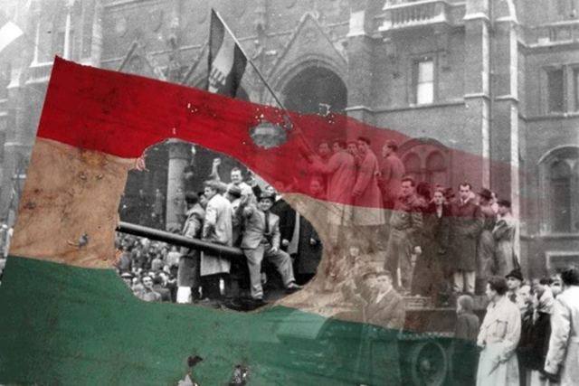
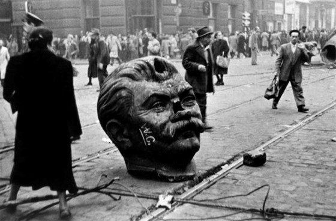
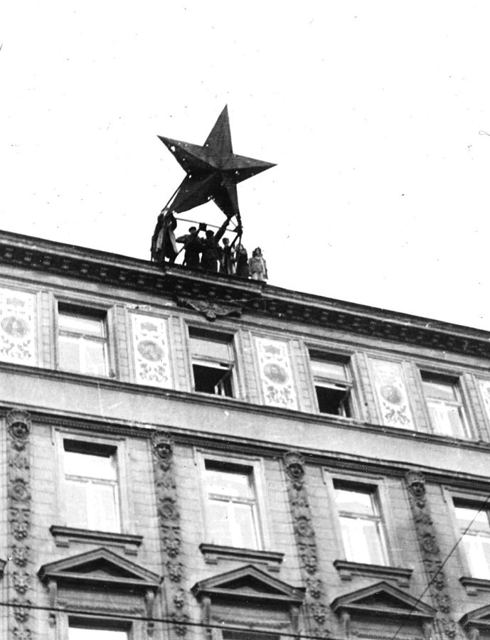
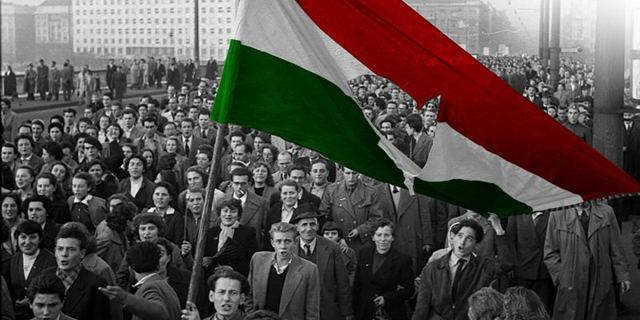

6. állomás
Jelképek
A forradalom jelképei: mit jelentettek 1956-ban?
- Lyukas zászló: a szovjet típusú címert kivágták a nemzeti színű zászlóból.
- Kossuth-címer: a régi magyar címer visszaállítását követelték.
- Vörös csillag: a szovjet uralom jelképe, a forradalom napjaiban leszedték az épületekről.
- Sztálin-szobor: a ledöntése a diktatúra elleni haragot fejezte ki.
- „Ruszkik haza!”: jelszó a szovjet csapatok kivonásáért.




Feladat
A Sztálin-fej és a vörös csillag felvétele a Fortepan archívumából származik.
Nézzétek meg a képeket: melyik jelkép látszik rajtuk, és mit jelentett? Párosítsátok a kártyákat a jelentésükkel.